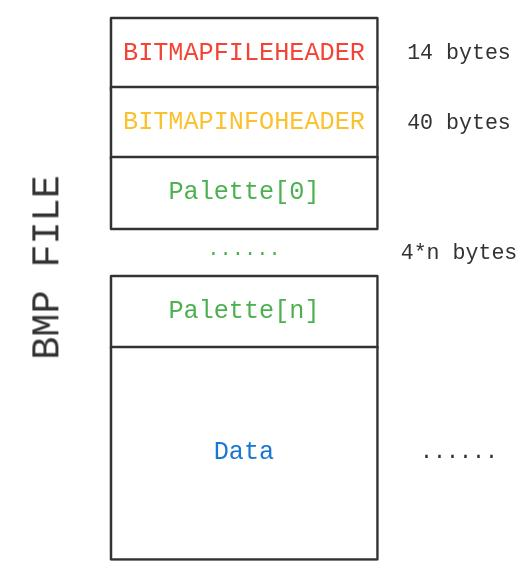

因为太无聊了所以说给自己挖了一个大坑，这下子填了好几天才整完这个坑。刚好也就当复习一下代码怎么敲（不是）
# BMP 文件
BMP (Bitmap image file) 格式应该算是微软早期主推的一个图像格式，这是一种一般不压缩的图像文件格式，相较于 PNG 或者 JPEG 这类的格式，BMP 文件的整体结构也更加简单。
BMP 文件结构包括 BMP 文件头，DIB 头，可选的调色板和后面的位图信息部分。BMP 文件头格式是比较固定的 14 字节，而 DIB 头在各个版本演进中逐渐增加，最初的版本为 12 字节（ BITMAPCOREHEADER ），后面的版本追加了更多的字段，最多可以增加到 124 字节（ BITMAPV5HEADER ）。
考虑到实现的复杂性（偷懒），我就只做 40 字节的 BITMAPINFOHEADER 的实现了，这应该也是目前最常用的。
# BMP 文件头
BMP 文件头 BITMAPFILEHEADER 负责标识文件的类型、大小和布局等信息。其中的各个字段均为小端序存储。
// BMP 文件头的定义，包括了文件的类型、大小、布局等信息 | |
typedef struct tagBITMAPFILEHEADER { | |
// 文件类型，必须是 `BM` | |
uint16_t Type; | |
// 文件的大小，以字节为单位 | |
uint32_t Size; | |
// 保留字，必须为 0 | |
uint16_t Reserved1; | |
// 保留字，必须为 0 | |
uint16_t Reserved2; | |
// 从 BITMAPFILEHEADER 结构体到位图数据的偏移量，以字节为单位 | |
uint32_t Offset; | |
} __attribute__((packed)) BITMAPFILEHEADER; |
这里使用 __attribute__((packed)) 的目的是关闭对齐，这样可以让结构体的大小保持为 14 字节，方便直接读取。
在文件头最开始是一个 2 字节的 Magic Number 字段 Type ，它的值是 0x4d42(BM) ，用于操作系统和程序识别 BMP 文件。
接下来是 4 个字节的文件大小字段 Size ，这个字段以字节为单位标识了文件的大小。
下面是两个 2 字节的保留字段 Reversed1 和 Reversed2 ，在目前的版本中这两个字段均为 0。
最后的偏移量字段标识了从文件头到位图数据的偏移量 Offset ，以字节为单位。我们通过 Size-Offset 就可以计算出位图数据的实际大小。
我们可以这样子读取文件头：
int LoadBMPHeader(FILE* fp, BMPFILE* image) { | |
// 读取文件头的若干字节 | |
size_t t = fread(&(image->FileHeader), 1, sizeof(BITMAPFILEHEADER), fp); | |
// 检查文件头是否完整 | |
if (t != sizeof(BITMAPFILEHEADER)) { | |
printf("Error: Incomplete FileHeader!\n"); | |
return 1; | |
} | |
// 检查 Magic Number | |
if (image->FileHeader.Type != BMP_MAGIC_NUMBER) { | |
printf("Error: Not a BMP file!\n"); | |
return 1; | |
} | |
return 0; | |
} |
# DIB 头 / 位图信息头
DIB (Device Independent Bitmap) 头标识了位图的具体信息。以 BITMAPINFOHEADER 为例，其结构如下：
// 存储了关于 DIB (Device Independent Bitmap) 尺寸和颜色信息的结构体 | |
typedef struct tagBITMAPINFOHEADER { | |
// 这个结构体占据的大小 | |
uint32_t Size; | |
// 位图的宽度 | |
int32_t Width; | |
// 位图的高度 | |
int32_t Height; | |
// 目标设备上调色板的数量。 | |
uint16_t Planes; | |
// 每个像素所占据的比特数。 | |
uint16_t BitCount; | |
// 位图所使用的压缩方式。 | |
uint32_t Compression; | |
// 位图的尺寸。 | |
uint32_t SizeImage; | |
// 每个像素的水平分辨率。 | |
int32_t XPelsPerMeter; | |
// 每个像素的垂直分辨率。 | |
int32_t YPelsPerMeter; | |
// 颜色表中实际被使用的颜色条目数。 | |
uint32_t ClrUsed; | |
// 显示位图所需要的颜色数。 | |
uint32_t ClrImportant; | |
} __attribute__((packed)) BITMAPINFOHEADER; |
在结构体最开始是一个 4 字节大小的 Size 字段，标识了 DIB 头的大小。通过这个字段我们也可以确定 DIB 头的版本。
接下来是 4 字节的宽度和高度字段 Width 和 Height ，这两个字段都是以像素为单位的有符号整型。位图的高度可以是负数，表示位图原点在左下角，否则位图的原点在左上角。
接下来是 2 字节的目标设备上调色板的数量 Planes ，这个字段的值始终是 1。
下面 2 字节的 BitCount 字段标识每个像素占据的比特数，可能的取值包括了 1，4，8，16，24，32 等，常用的应该是 1、8、24，也就是分别对应了黑白、256 位色、RGB 各 8 位深度的情况。32 位色是额外包括了一个 Alpha 通道。
接下来是 4 字节的压缩方式标识 Compression ——BMP 也是可以压缩的。可能的压缩方式包括了 6 位或者 8 位的游程编码（RLE, run-length encoding），不过常见的情况是不压缩 BI_RGB (0)。
下面是 4 字节的图像的尺寸 SizeImage ，以字节为单位。如果不压缩，这个字段的值是 0。
接下来是两个 4 字节有符号的整型字段 XPelsPerMeter 和 YPelsPerMeter ，标识每个像素的水平和垂直分辨率，以像素 / 米为单位，便于在不同的设备上显示。一般也可以不设置这些字段。
下面两个 4 字节的字段分别是颜色表实际使用颜色数 ClrUsed 和显示位图所需的颜色数 ClrImportant 。
对于 8 位及以下的位图，因为色深有限，故而会直接存储一张调色板表。调色板包括了位图所使用的所有颜色，每个颜色占据了一个 4 字节的结构体：
// 描述 RGB 颜色的结构体 | |
typedef struct tagRGBQUAD { | |
// 蓝色的亮度 | |
uint8_t Blue; | |
// 绿色的亮度 | |
uint8_t Green; | |
// 红色的亮度 | |
uint8_t Red; | |
// 保留，必须为 0 | |
uint8_t Reserved; | |
} __attribute__((packed)) RGBQUAD; |
通过这个结构体就可以确定一种颜色。而 BMP 文件中位图数据字段中的数据就都是这个调色板表中颜色的下标。
对于 8 位位图的情况，最多可以有 256 个调色板。而 16 位或者更高的情况下，存储所有的调色板就不是一个理智的选择了，这时候会选择储存一部分调色板，或者这时调色板的数量会设置为 0，也就是文件位图字段直接放置了颜色信息而不是调色板下标。
ClrImportant 则是一个为了兼容性实现的字段，通过表示一部分颜色更加重要，位图可以只显示这些颜色而不是全部颜色，位图文件可以更好地兼容一些不能显示所有颜色的设备。 ClrImportant 的值表示前若干个调色板颜色是必须的，例如 ClrUsed 为 256 但是 ClrImportant 为 50，就意味着调色板表的前 50 个颜色是必须的。
我们可以实现一个简单的读取：
int LoadBMPInfoHeader(FILE* fp, BMPFILE* image) { | |
// 读取信息头的若干字节 | |
size_t t = fread(&(image->InfoHeader), 1, sizeof(BITMAPINFOHEADER), fp); | |
// 检查信息头是否完整 | |
if (t != sizeof(BITMAPINFOHEADER)) { | |
printf("Error: Incomplete InfoHeader!\n"); | |
return 1; | |
} | |
return 0; | |
} |
# 图像数据读取

这样子我们可以获取到 BMP 文件的各个部分，可以定义这样子的一个结构体：
// BMP 文件 | |
typedef struct tagBMPFILE { | |
// BMP 文件头 | |
BITMAPFILEHEADER FileHeader; | |
// BMP 文件信息头 | |
BITMAPINFOHEADER InfoHeader; | |
// 标识调色板数量 | |
uint32_t PaletteCount; | |
// BMP 文件调色板数据 | |
RGBQUAD* Palette; | |
// 标识位图数据数量 (bytes) | |
uint32_t DataCount; | |
// BMP 文件位图数据 | |
uint8_t* Data; | |
} __attribute__((packed)) BMPFILE; |
读取 BMP 文件我们最后是要得到一个这样子的矩阵 mat[channel][height][width] ：
typedef struct tagIMAGEMAT { | |
// 图像的宽度 | |
uint32_t width; | |
// 图像的高度 | |
uint32_t height; | |
// 图像的具体数据，以一个三维数组的形式来表示 | |
// data[channel][row][column] | |
uint8_t*** data; | |
} IMAGEMAT; |
下面要看的也就是怎么去读取 BMP 文件的位图数据字段。BMP 位图数据字段是像素按照行存储的，同时每一行的数据都对齐到 4 字节。
对于 24 位的位图，每一个像素占据了三个字节，分别是 B、G、R 通道上的颜色。每一行结束之后，会用 0x00 填充到长度为 4 的倍数。
这一行有一个白色的像素： | |
0xff 0xff 0xff | 0x00 | |
一个红色的像素和一个绿色的像素： | |
0x00 0x00 0xff | 0x00 0xff 0x00 | 0x00 0x00 |
这样子可以读取：
if (image.InfoHeader.BitCount == 24) { | |
for (uint32_t idx = 0, cnt = 0; idx < image.DataCount; idx += 3, cnt++) { | |
uint32_t row = cnt / mat->height; | |
uint32_t col = cnt % mat->width; | |
if (cnt % mat->width == 0 && cnt){ | |
idx += row_size - idx % row_size; | |
continue; | |
} | |
if (image.InfoHeader.Height < 0) { | |
row = mat->height - row - 1; | |
} | |
// BGR | |
mat->data[0][row][col] = image.Data[idx + 2]; | |
mat->data[1][row][col] = image.Data[idx + 1]; | |
mat->data[2][row][col] = image.Data[idx]; | |
row++; | |
row %= mat->width; | |
} | |
} |
对于 16 位位图，每个像素用 5 个比特进行表示，剩下的一个比特补 0：
uint32_t color = ((uint16_t*)image.Data)[idx]; | |
mat->data[0][row][col] = (color >> 8) & 0b11111000; | |
mat->data[1][row][col] = (color >> 3) & 0b11111000; | |
mat->data[2][row][col] = (color << 2) & 0b11111000; |
对于 8 位及以下的情况，每个像素存储的都是在调色板中的下标。以 4 位深度的情况为例：
// 4bit color | |
for (uint32_t idx = 0, cnt = 0; idx < image.DataCount; idx++, cnt++) { | |
uint32_t row = cnt / mat->height; | |
uint32_t col = cnt % mat->width; | |
if (cnt % mat->width == 0 && cnt){ | |
idx += row_size - idx % row_size; | |
continue; | |
} | |
if (image.InfoHeader.Height < 0) { | |
row = mat->height - row - 1; | |
} | |
for (uint32_t pos = 0; pos < 2; pos++) { | |
uint32_t palette_idx = get_4bits(image.Data[idx], pos); | |
if (palette_idx >= image.PaletteCount) { | |
printf("Error: Invalid Palette!\n"); | |
return 1; | |
} | |
mat->data[0][row][col] = image.Palette[palette_idx].Red; | |
mat->data[1][row][col] = image.Palette[palette_idx].Green; | |
mat->data[2][row][col] = image.Palette[palette_idx].Blue; | |
row++; | |
row %= mat->width; | |
} | |
} |
这样子基本上就能够实现对 BMP 文件的读取了。
# 碎碎念
之前基本上各种玩的东西都是拿 Python 写的，有一说一，Python 写着是真的爽爆。不过 C 语言的代码格式化了之后是真的比 Python 好看多了（x
其实相较于 PNG 或者 JPEG 这类用了复杂的编码和信号处理的图片格式来说，BMP 是真的简单了不少，不过这个格式没什么定义的规范文件，基本上都靠 wikipedia。然后拿 C 写的话各种内存问题还是真的脑溢血。